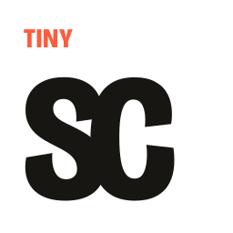
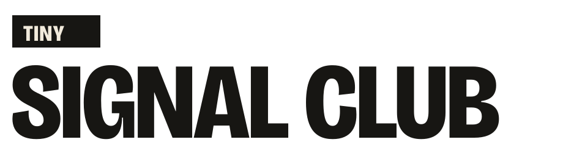

THE NAME DOES THE WORK
Tiny is a scale rule.
The logo does not ask an abstract object to pretend it means participation. Its hierarchy comes directly from the name and survives every project the club may build.

- 01Tiny is tinyThe smallest word becomes a repeatable hierarchy instead of a decorative label.
- 02Signal Club is boldA professional outlined display face gives the umbrella brand a confident, friendly voice.
- 03The SC monogramThe initials overlap into one compact club shape without inventing a mascot or telecom symbol.
- 04Input becomes resultMotion and episode layouts show the viewer’s actual signal small and the shipped outcome large.
THE IDENT
Show the evidence, not a metaphor.
One actual viewer input appears small, the build advances, and the verified result arrives at full scale before the club signs the frame.
LOGO FAMILY
One idea, every required format.


REAL-WORLD SIZES
It survives where logos usually fail.
The SC remains readable at avatar scale. Below 24 pixels, the favicon simplifies TINY to one coral T instead of pretending microtype is legible.
DYNAMIC IDENTITY
The content changes. The rule stays.
COLOR + VOICE
Bright signal. Warm room.
Signal Blue
#3157FF
Room Cream#F1EADB
Live Coral#FF5B3D
Proof Lime#C8EF52
Studio Ink#171613
Warm, specific, lightly strange.
Say what viewers chose, what was built, and what remains uncertain. Never fake consensus, urgency, technical certainty, or community ownership.
THE SYSTEM IN USE
It already works beyond the logo sheet.
These are editable SVG masters with exact platform copy. They remain local drafts until the corresponding account or publication is explicitly approved.
DO
- Keep TINY visibly smaller than SIGNAL CLUB.
- Use real contribution and result language.
- Use the monogram for avatars and the favicon below 24 px.
- Let project art remain project-specific.
DO NOT
- Add Wi‑Fi arcs, chat bubbles, sparkles, or mascots.
- Stretch, rotate, or separate the SC monogram.
- Add decorative dots, squares, or stickers.
- Sell signals as votes or ownership.